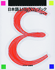
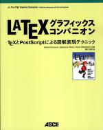
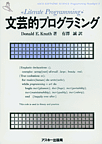
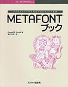
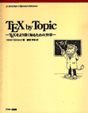
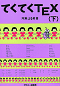
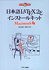
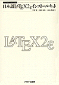

|  | 日本語 LaTeX2e ブック （正誤表, 索引） [詳細] |
| 中野 賢 著 | |
| アスキー | |
| ISBN4-7561-1667-1 |
 |
The LaTeX コンパニオン [詳細] |
| Michel Goossens、Frank Mittelbech、Alexander Samarin著/アスキー書籍編集部監訳 | |
| アスキー | |
| ISBN4-7561-1813-5 |
|  | The LaTeX グラフィックス コンパニオン [詳細] |
| Michel Goossens、Sebastian Rahtz、Frank Mittelbach著/鷺谷好輝訳 | |
| アスキー | |
| ISBN4-7561-3461-0 |

|
The LaTeX Web コンパニオン [詳細] |
| Michel Goossens、Sebastian Rahtz著、鷺谷好輝 訳 | |
| アスキー | |
| ISBN4-7561-3973-6 |
 |
改訂新版 TeX ブック [詳細] |
| Donald Knuth 著/斉藤 信男 監修/鷺谷 好輝 訳 | |
| アスキー | |
| ISBN4-7561-0120-8 |
|  | 文芸的プログラミング [詳細] |
| Donald Knuth 著/有澤 誠 監訳 | |
| アスキー | |
| ISBN4-7561-0190-9 |
|  | METAFONT ブック [詳細] |
| Donald Knuth 著/鷺谷 好輝 訳 | |
| アスキー | |
| ISBN4-7561-0194-1 |
|  | TeX by Topic [詳細] |
| Victor Eijkhout 著/富樫 秀昭 訳 | |
| アスキー | |
| ISBN4-7561-3067-4 |
| 日本語 TeX テクニカルブック I [詳細] | |
| アスキー出版技術部 責任編集 | |
| アスキー | |
| ISBN4-7561-0405-3 |
 |
てくてく TeX 上 [詳細] |
| 阿瀬 はる美 著 | |
| アスキー | |
| ISBN4-7561-0222-0 |
|  | てくてく TeX 下 [詳細] |
| 阿瀬 はる美 著 | |
| アスキー | |
| ISBN4-7561-0223-9 |
 |
日本語 LaTeX2e インストールキット UNIX版 （関連情報） [詳細] |
| 中野 賢、富樫 秀昭 共著 | |
| アスキー | |
| ISBN4-7561-3099-2 |
|  | 日本語 LaTeX2e インストールキット Macintosh版 （関連情報） [詳細] |
| 内山 孝憲、中野 賢 共著 | |
| アスキー | |
| ISBN4-7561-3100-X |
|  | 日本語 LaTeX2e インストールキット （関連情報） [詳細] |
| 中野 賢、淺山 和典、内山 孝憲 共著 | |
| アスキー | |
| ISBN4-7561-1942-5 |
藤田 眞作 著
アジソン・ウェスレイ
ISBN4-7952-9664-2
藤田 眞作 著
アジソン・ウェスレイ
ISBN4-7952-9679-0
藤田 眞作 著
アジソン・ウェスレイ
ISBN4-7952-9685-5
ポール・W・エイブラハム 著/渡辺 了介 訳
アジソン・ウェスレイ
ISBN4-7952-9643-X
奥村 晴彦著
技術評論社
ISBN4-7741-0481-7
乙部 厳己、江口 庄英 著
ソフトバンク
ISBN4-7973-0148-1
乙部 厳己、江口 庄英 著
ソフトバンク
ISBN4-7973-0267-4
乙部 厳己 著
ソフトバンク
ISBN4-7973-0477-4
逆井 克己 著
日本印刷新聞社
ISBN4-88884-093-8C
ライトストーン
（pLaTeXを使ったワープロソフト）